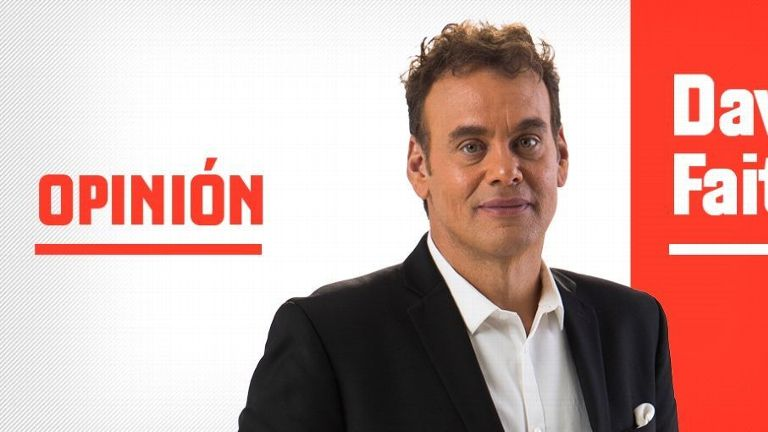
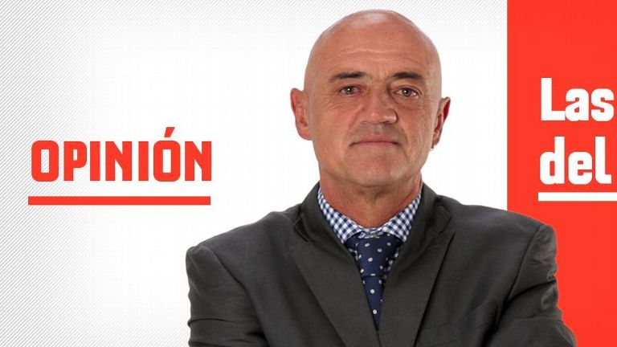
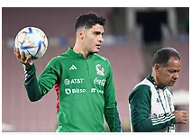
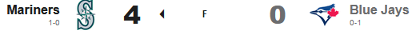
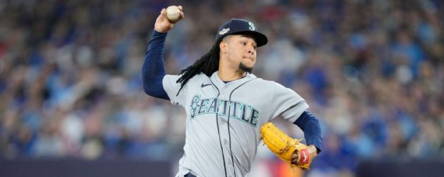
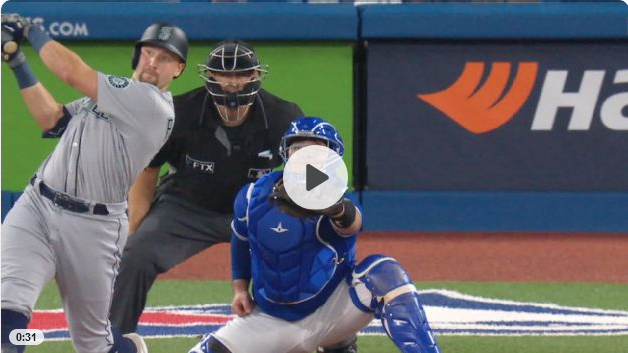
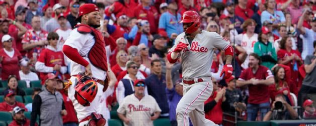
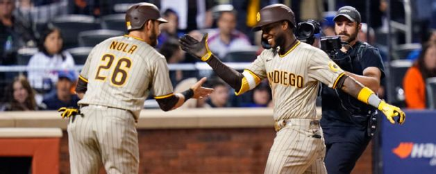
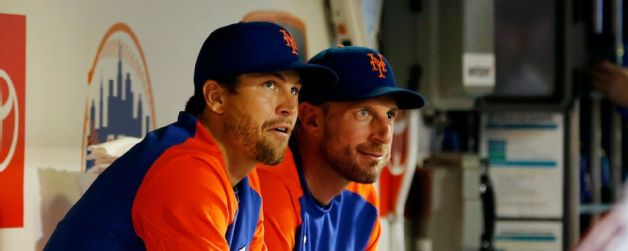
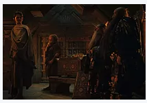

Titulares
- Daniel Jones en duda para juego en Londres
- White Sox: Manager La Russa renuncia por salud
- Orbelín cierra con goleada la semana mexicana
- Haaland y los jugadores con '10' en L'Équipe
- ¡Así es la carta de Rafa Márquez en FIFA 23!
- Audiencia de apelación de Griner en octubre
- F1: Ocon tomó el metro para regresar al paddock
- Indonesia: investigan a 18 oficiales por tragedia
Lo más destacado
David Faitelson: 'Que sea espectacular, no significa que no sea mediocre'
David hace una crítica al sistema de repechaje que permite que 12 equipos tengan la oportunidad de avanzar a la liguilla.
'Tata' Martino se quedó estancado en el tiempo
México no ha evolucionado, se quedó estancado en la pandemia y lo único que ha pasado es que la relación del 'Tata' Martino con el medio se ha deteriorado

México, sufre...
Tras la última fecha FIFA previa al Mundial, la realidad, fría y tajante, es que México sigue sin encontrar su mejor nivel futbolístico y que esas ausencias por lesiones, por veto y hasta por capricho, podrían alegarse más de la posibilidad de trascender en Qatar.

Repechaje pos-pandemia
Es momento que se tomen medidas de superación en nuestra liga y por primera vez pensar y actuar en razón de lo justo y lo deportivo.
Otras noticias

SELECCION MEXICANA
Jimenez seguira su rehabilitacion en Mexico, el objetivo, tenerlo listo para Qatar
GOLF
El español Eugenio Lopez Chacarra comparte el liderato tars la primera ronda del LIV Golf Bangkok


Castillo Domina a Blue Jays y pone adelante a Mariners

¡Subio la marea en Toronto!

Phillies aprovechan el descontrol de Cardenales y dan el primer golpe en St.Louis

Padres 'explota' a Scherzer con 4 jonrones y ya apalea a Mets

Padres 'explota' a Scherzer con 4 jonrones y ya apalea a Mets
Mas categorias
VIDEOJUEGOS
La produccion de la pelicula de "Five Nights At Freddy's" comenzara en 2023

THE RINGS OF POWER
The Rings of Power, episodio 7 explicado
CINE Y TV
¿Joaquin Cossio podria hacer la voz de Bowser en la pelicula de "Super Mario Bros"?